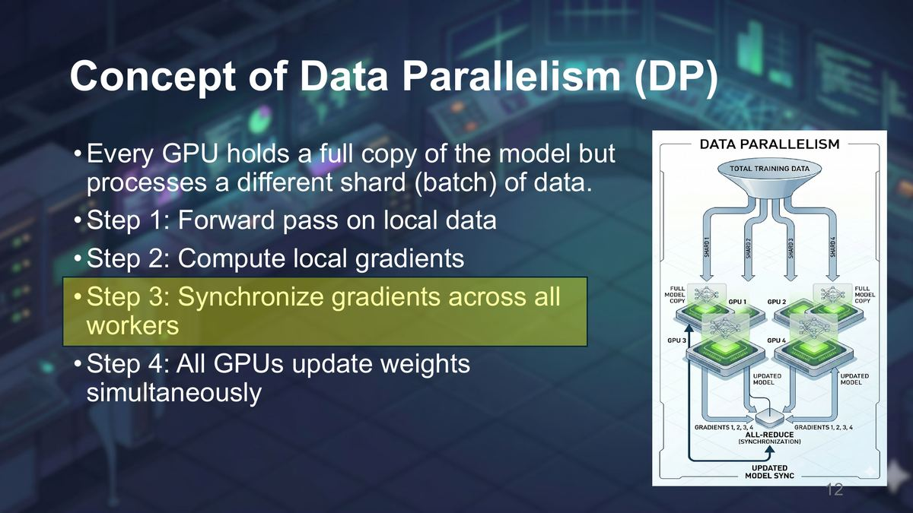
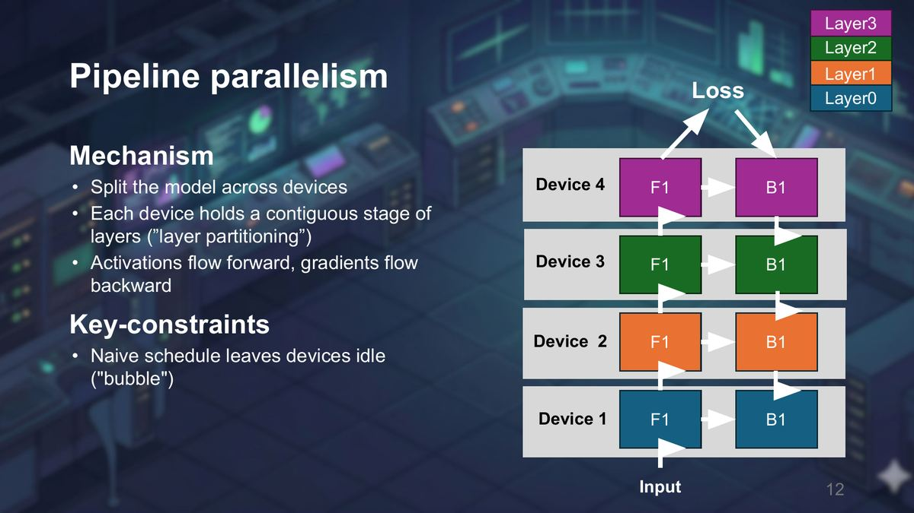

13 Distributed Training and Serving
Compare distributed training and serving strategies by the object each divides, the communication each adds, and the memory, topology, and user-metric limits each must satisfy.
Distributed training changes the problem from one GPU executing one copy of the workload to many GPUs coordinating state and computation. The central design question is what is replicated, what is sharded, and what must be communicated every step.
The scaling axis follows the object that prevents one device from meeting the target. Data parallelism splits examples or requests, sharded data parallelism splits model state, tensor and pipeline parallelism split model computation, and expert parallelism splits expert modules and routes token representations to them. Each split creates its own collectives, cache-placement rules, and waiting points, so it must fit the topology and the user-facing metric. Distributed serving may instead divide requests across worker groups or shard one model within a group.
![Distributed training plans divide data, model state, layers, stages, or experts. Distributed serving routes each request to one worker group and keeps that request's KV cache with the selected group. Section labels identify chapter 13 section map: 13.1 - Work and state beyond one GPU; 13.2 - DDP and gradient all-reduce; 13.3 - DDP bucket timing and overlap; 13.4 - Sharding model state; 13.5 - Model-parallel strategies; 13.6 - Combining and sizing parallelism; 13.7 - Distributed inference and serving; 13.8 - KV-cache locality in distributed serving.](../assets/fig-m4-c13-f01.png)
Each training strategy is tied to the object it divides and the collective or point-to-point transfer it needs. In serving, a router selects one worker group and the request’s KV cache stays with that group unless an explicit migration policy pays the transfer or recomputation cost.
The levers this chapter develops, in the vocabulary of Section 1.6.1, are scale out, because each parallelism strategy buys capacity with communication, and fit in memory, because sharding places state that no longer fits on one GPU.
13.1 Work and state beyond one GPU
Scaling beyond one GPU means deciding which object is too large or too slow on one device. The answer determines the distributed strategy.
- Data: The training examples or serving requests. Splitting data can increase throughput when each replica can fit the full model, enough work is available, and communication does not dominate.
- Model state: Parameters, gradients, and optimizer state. Sharding state reduces per-GPU memory but introduces communication to gather or reduce the pieces that each step needs.
- Layer computation: Matrix multiplications and attention inside a layer. Tensor parallelism splits this work, but then partial results must be combined frequently.
- Layer sequence: The ordered stack of transformer layers. Pipeline parallelism places different layer ranges on different devices and moves activations between stages.
- Experts: Specialized modules in a Mixture-of-Experts model. Expert parallelism routes token representations to the devices where selected experts are placed.
Replication is simple but duplicates memory. Sharding saves memory or increases parallel compute, but it creates communication that must fit the topology. Distributed strategies are applications of collective communication and physical fabric constraints, not replacements for them.
The object being split determines the communication obligation: replicated models synchronize gradients, while split model work exchanges activations or partial results. The next question is how Distributed Data Parallel (DDP) turns replicated parameters and different local mini-batches into synchronized updates.
13.2 DDP and gradient all-reduce
Distributed Data Parallel (DDP) is the baseline multi-GPU training strategy when the full model fits on every GPU. Each process holds one model replica and computes local gradients on its assigned mini-batch shard, then synchronizes gradients before the optimizer step. DDP itself does not shard the input. The application assigns per-rank shards, for example with a distributed sampler.
13.2.1 torch.distributed and DDP execution
PyTorch DDP is a training strategy implemented above torch.distributed. The wrapper registers gradient hooks and groups gradients into buckets with a configurable bucket_cap_mb, following the Distributed Data Parallel design note1. The process group and its backend execute the all-reduces required to keep replicas synchronized.
- Rank: The integer identity of a participating process within its process group, as defined in Section 2.5. A common setup uses one process per GPU.
- Replica: A full copy of the model parameters on one rank. DDP keeps replicas numerically synchronized by all-reducing gradients.
- Local mini-batch: The data shard processed by one rank.
- Global batch: The effective batch across all ranks, usually local mini-batch size multiplied by number of data-parallel ranks and gradient-accumulation steps.
- Gradient all-reduce: Each rank contributes gradients, the gradients are reduced, and every rank receives the same synchronized result.
DDP works well when the model fits on each GPU and each step has enough computation to amortize synchronization. It does not reduce parameter memory because every rank stores a full replica. When model state is the memory wall, FSDP or another sharding strategy is needed.
The important DDP state relationship is replication: model state is copied on every rank, while the application partitions the data stream across ranks and each rank processes its assigned shard.

DDP’s default initialization synchronizes replicas from rank 0. Backward hooks reduce gradient buckets, and every rank applies an equivalent optimizer update after the required synchronization. With the default reduction, DDP averages gradients across ranks. Custom communication hooks can change that reduction, so the loss normalization and reduction rule must agree.2
In Figure 13.2, “simultaneously” refers to the same logical training step, not synchronized wall-clock updates. “UPDATED MODEL SYNC” describes replicas agreeing after compatible local optimizer updates. Default DDP synchronizes gradients during backward. It does not add a weight-synchronization collective after each optimizer step.3
The implementation pattern is one process per GPU: initialize the process group, map LOCAL_RANK to the local CUDA device, wrap the model with Distributed Data Parallel, shard the data stream with a distributed sampler, and let backward hooks launch gradient all-reduces. The code template follows the bucket-timing explanation so every line can be mapped to the mechanism.
13.3 DDP bucket timing and overlap
Section 12.9 gives the general overlap rule. In DDP, communication/computation overlap uses the order of backward propagation. Gradients for later layers become ready while earlier layers are still computing backward, so DDP can start all-reducing ready gradient buckets before the full backward pass completes.
- Gradient bucket: A group of parameter gradients packed together so DDP can launch fewer, larger all-reduces instead of one collective per tensor.
- Ready time: The moment all gradients in a bucket have been produced by backward propagation.
- Hidden communication: Communication that completes while independent backward computation is still running, so it does not extend step time.
- Exposed tail: The communication left after the last useful computation has finished (Section 7.1). Here it is the part of the gradient all-reduce that no backward work covers.
Overlap has a cost. Small buckets may start earlier while reducing bandwidth efficiency because there are more collectives. Large buckets may use bandwidth better while starting later and leaving a larger exposed tail. The useful measurement is whether reducing collective time would still reduce the end-to-end training step.
The DDP reducer turns many parameter gradients into bucket-level communication. A bucket becomes ready when all its gradients are available, but reductions must launch in the same bucket order on every rank. A ready bucket can therefore wait for an earlier bucket. Once that ordering condition is met, its reduction can run while earlier layers in the backward pass are still computing.4
A bucket passes through four ordered steps:
- Form the buckets: Group parameter gradients using a configured limit such as
bucket_cap_mb. Smaller buckets can start earlier. Larger buckets usually use bandwidth more efficiently. - Mark gradients ready: Autograd hooks mark each parameter gradient as backward propagation produces it. Parameter order and graph structure determine when every gradient in a bucket is available.
- All-reduce launch: A ready bucket is reduced in the shared bucket order across the data-parallel ranks, usually through NCCL on NVIDIA GPUs. The communication overlaps only while independent backward computation continues.
- Exposed tail: Communication remaining after backward computation finishes directly lengthens the training step.
The DDP implementation extends the Section 1.5 supervised loop with three distributed additions: each process owns a rank and its assigned GPU, the data stream is partitioned by rank, and backward propagation triggers gradient communication.
A slow DDP step can still come from local causes such as data loading, forward kernels, backward memory pressure, or optimizer state. Distributed causes add rank skew, all-reduce bandwidth, bucket timing, and topology placement.
Worked example: DDP training template
This synthetic template requires a CUDA/NCCL-enabled PyTorch installation and one available GPU per worker. It shows process roles, rank-to-device mapping, sampler behavior, optimizer flow, backward synchronization, and cleanup. The launch command is torchrun --standalone --nproc-per-node=<gpu_count> script.py. A successful run performs two training epochs without printing a loss report. The synthetic dataset and linear model establish the distributed control path. This one-layer model does not demonstrate overlap between multiple gradient buckets. If the dataset length is not divisible by the rank count, the sampler’s default padding repeats some examples to give ranks equal-length streams.
Code example: DDP training template
import os
import torch
import torch.distributed as dist
import torch.nn as nn
from torch.utils.data import DataLoader, DistributedSampler, TensorDataset
from torch.nn.parallel import DistributedDataParallel as DDP
def train_one_rank():
dist.init_process_group("nccl")
try:
local_rank = int(os.environ["LOCAL_RANK"])
torch.cuda.set_device(local_rank)
device = torch.device("cuda", local_rank)
feature_count = 1024
class_count = 100
num_epochs = 2
generator = torch.Generator().manual_seed(0)
dataset = TensorDataset(
torch.randn(4096, feature_count, generator=generator),
torch.randint(class_count, (4096,), generator=generator),
)
sampler = DistributedSampler(dataset, shuffle=True)
loader = DataLoader(
dataset, batch_size=8, sampler=sampler, num_workers=4, pin_memory=True
)
model = DDP(nn.Linear(feature_count, class_count).to(device), device_ids=[local_rank])
loss_fn = nn.CrossEntropyLoss()
optimizer = torch.optim.AdamW(model.parameters(), lr=3e-4)
for epoch in range(num_epochs):
sampler.set_epoch(epoch)
for features, labels in loader:
features = features.to(device, non_blocking=True)
labels = labels.to(device, non_blocking=True)
loss = loss_fn(model(features), labels)
loss.backward()
optimizer.step()
optimizer.zero_grad(set_to_none=True)
finally:
dist.destroy_process_group()
if __name__ == "__main__":
train_one_rank()Backward propagation is the key distributed boundary in this template: DDP hooks mark gradient buckets ready and submit their reductions while other backward work may still run. Measure bucket timing, the exposed communication tail, and the slowest rank before changing bucket sizes, rank placement, or the communication backend.
13.4 Sharding model state
Fully Sharded Data Parallel (FSDP) supports several sharding strategies. Under FULL_SHARD, parameters, gradients, and optimizer state are sharded across ranks outside their materialized use windows, following the FullyShardedDataParallel documentation5. Other strategies replicate or retain more state. Full sharding reduces per-GPU memory but introduces parameter all-gather and gradient reduce-scatter around layer execution.
In PyTorch 2.14’s FullyShardedDataParallel API, FULL_SHARD gathers a wrapped unit’s parameters before forward, reshards afterward, gathers again for backward, and reshards after backward. SHARD_GRAD_OP gathers before forward but keeps those full parameters through backward, then reshards them. Both keep optimizer state partitioned and reduce-scatter gradients on synchronized steps. Retaining full parameters removes the second gather but lengthens their memory lifetime. FSDP’s no_sync() context defers gradient synchronization during accumulation. The first forward-backward pass after leaving the context synchronizes the accumulated gradients. Inside this context, SHARD_GRAD_OP also retains full parameters after backward. These windows refer to the cited ShardingStrategy API, not every API called FSDP.6
13.4.1 DeepSpeed and ZeRO implementations
Zero Redundancy Optimizer (ZeRO) names the staged sharding strategy, following ZeRO: Memory Optimizations Toward Training Trillion Parameter Models7, while DeepSpeed is a distributed-training framework that implements ZeRO-family state placement together with optimizer, pipeline, and runtime integrations. PyTorch FSDP is a separate framework with selectable sharding strategies. Its FULL_SHARD mode partitions parameters, gradients, and optimizer state.
Framework selection follows the required state placement and collective schedule. Configuration names differ, but memory savings and communication costs follow the same parameters, gradients, optimizer state, all-gather, and reduce-scatter objects.
PyTorch FSDP and DeepSpeed ZeRO Stage 3 are related full-sharding approaches with similar state-placement goals, but they are distinct APIs and implementations with different policies and scheduling behavior. The comparison below therefore follows the parameter, gradient, and optimizer-state lifecycle instead of treating the framework names as interchangeable.
The ZeRO family names three progressively broader state-sharding choices:
- ZeRO-1: Shards optimizer state while parameters and gradients remain replicated. The 16 bytes per parameter of Section 1.3 become \(4+12/N_d\) bytes per rank, where \(N_d\) is the number of data-parallel ranks and 12 bytes are the optimizer’s FP32 master copy and two Adam moments.
- ZeRO-2: Also shards gradients, leaving \(2+14/N_d\) bytes per parameter per rank. Reduce-scatter timing follows bucket readiness, hooks, overlap, and implementation policy rather than an unconditional immediate layer-by-layer rule.
- ZeRO-3: Also shards parameters outside their materialized use windows, leaving \(16/N_d\) bytes per parameter per rank. Implementations may reshard or retain gathered parameters. Temporary full parameters and communication buffers still consume memory.
Worked example: Model-state memory per GPU under ZeRO
Inputs: The ZeRO paper’s example model has \(7.5\times10^9\) parameters trained with mixed-precision Adam on \(N_d=64\) data-parallel GPUs.8 Activations, workspaces, and buffers are excluded.
| Stage | Bytes per parameter per GPU | Model state per GPU |
|---|---|---|
| Plain data parallelism | 16 | 120 GB |
| ZeRO-1 | \(4+12/64\approx4.19\) | 31.4 GB |
| ZeRO-2 | \(2+14/64\approx2.22\) | 16.6 GB |
| ZeRO-3 | \(16/64=0.25\) | 1.9 GB |
Conclusion: Most of the saving comes from the optimizer state, which is 12 of the 16 bytes. At 64 ranks, sharding the gradients as well reduces 31.4 GB to 16.6 GB, nearly halving what remains. Sharding the parameters makes this persistent model-state estimate fall in proportion to the number of GPUs. The price is communication: ZeRO-3 gathers parameters before they are used, which the paper puts at about 1.5 times the communication volume of plain data parallelism under its communication model.
The comparison below holds the data-parallel goal fixed and shows which model-state objects remain replicated or become sharded. The final column identifies the communication phase introduced by each broader sharding choice.
| Strategy | Parameters | Gradients | Optimizer state | Main timing cost |
|---|---|---|---|---|
| DDP | Replicated | All-reduced and replicated | Replicated | Gradient all-reduce after buckets become ready |
| ZeRO-1 | Replicated | Replicated | Sharded | Gradient synchronization, local partition update, then distribution of updated parameter partitions to all replicas |
| ZeRO-2 | Replicated | Reduce-scattered or sharded | Sharded | Gradient reduce-scatter, local partition update, then distribution of updated parameter partitions to all replicas |
| ZeRO-3 / FSDP FULL_SHARD | Sharded outside layer execution | Reduce-scattered and sharded | Sharded | Parameter all-gather before forward/backward layer use plus reduce-scatter after gradients |
Full sharding has separate forward and backward communication phases. Parameters are all-gathered before forward computation and may be resharded afterward. If forward released the full parameters, they are gathered again before backward computation. As gradients become ready, reduce-scatter combines them and leaves each rank with its local shard. Prefetch settings can overlap a future gather with current computation, but they may raise peak memory by materializing parameters earlier.
One full-shard layer follows this communication sequence:
- Gather before forward: All-gather parameter shards so the layer can compute. Prefetching too early increases peak memory.
- Reshard after forward: Release or reshard the full parameters according to the selected strategy. Keeping them improves reuse but reduces memory savings.
- Gather before backward: All-gather parameters again when forward released them. Backward prefetch can overlap this transfer with compute while increasing live memory.
- Reduce after gradients are ready: Reduce-scatter gradients and retain each rank’s local shard. Communication that remains after compute becomes the exposed tail.
- Update the local parameter shard: Once the step’s required backward, accumulation, and synchronization are complete, each rank’s optimizer uses its reduced gradient shard and matching optimizer-state shard to update the same parameter indices. This is one step update, not a separate update each time a layer finishes backward.
- Gather updated values at next use: Full sharding keeps the updated parameter partitions on their ranks. The next forward gathers those new partitions when the wrapped unit is needed. Optimizer buffers remain local.9
A concrete optimizer update makes the final stage of the sharded cycle visible. Stochastic gradient descent (SGD) with momentum is an optimizer that keeps a decaying sum of past gradients and moves parameters against that accumulated direction. Its momentum buffer stores that history for each parameter between steps. The example uses this shorter update rule to expose how parameter, gradient, and optimizer-state shards stay aligned.
Worked example: From gradient shards to updated parameters
Consider one four-parameter unit in a training step after momentum buffers have already been initialized. Rank 0 stores parameters \([1,2]\) and momentum \([0.5,-0.5]\) for indices 0 and 1. Rank 1 stores parameters \([3,4]\) and momentum \([1,-1]\) for indices 2 and 3. A forward all-gather temporarily supplies \([1,2,3,4]\) on both ranks. If full parameters are released after forward, a second gather reconstructs the same values for backward. Parameters stay unchanged until the step update.
Suppose backward on equally weighted local data shards produces gradient contributions [1, 2, 3, 4] and [3, 6, 9, 12]. SUM reduce-scatter followed by division by two leaves rank 0 with mean-gradient shard [2, 4] and rank 1 with [6, 8]. The division expresses this example’s mean-loss convention, not an implicit property of SUM.
The momentum SGD update is \(v' = 0.9v + g\) followed by \(p' = p - 0.1v'\), where \(p\) is a parameter shard, \(g\) its mean-gradient shard, and \(v\) its existing momentum buffer. The prime denotes the new value. The factor 0.9 retains part of the previous buffer, and the learning rate 0.1 sets the parameter change per unit of new momentum. This omits weight decay, dampening, and Nesterov momentum.10
| Rank | New momentum, 0.9v + g | New parameters, p - 0.1v’ |
|---|---|---|
| 0 | \([0.45+2,-0.45+4]=[2.45,3.55]\) | \([1-0.245,2-0.355]=[0.755,1.645]\) |
| 1 | \([0.9+6,-0.9+8]=[6.9,7.1]\) | \([3-0.69,4-0.71]=[2.31,3.29]\) |
The next forward all-gather supplies [0.755, 1.645, 2.31, 3.29] on both ranks. Each rank retains only its own updated parameter and momentum partitions between full-shard use windows. Adam would retain two moment buffers per parameter and use a different update rule, but the matching of local parameter, gradient, and optimizer-state indices is the same.
Conclusion: Gradient reduction is followed by a local update and later parameter materialization. Persistent shards and temporary full tensors occupy different storage windows. The values here illustrate that cycle, not measured convergence or runtime performance.
ZeRO-1 and ZeRO-2 also let each rank update its assigned parameter partition using local optimizer state. They then distribute the updated partitions, for example by all-gather, to restore the full parameter replicas before the next forward. In the example, each replica must receive both [0.755, 1.645] and [2.31, 3.29]. ZeRO-1 keeps the synchronized gradients replicated, whereas ZeRO-2 partitions them as well. Full sharding instead leaves parameters partitioned between their next-use gathers.11
When even sharded model state does not fit, selected state can move to host memory. Offload stores that state on the CPU and transfers the values needed by GPU computation. ZeRO-Offload runs optimizer computation on the CPU. The paper also describes an optional one-step delayed update that overlaps CPU optimizer work with GPU computation. This changes which step’s gradients supply the update. In its tested V100 setup, the authors report training models with over 13 billion parameters on one GPU, about ten times their PyTorch baseline, without model changes.12 PyTorch FSDP’s CPUOffload option keeps parameters on the CPU when they are not in use, which also moves the gradients to the CPU and runs the optimizer step there.13 Offload trades GPU memory for PCIe traffic (Section 2.5) and CPU optimizer time. It is useful when the capacity gain outweighs those costs for the workload.
Full sharding reduces persistent per-rank model state by adding timed parameter gathers and gradient reduce-scatters. Its benefit depends on peak-memory relief compared with exposed communication and temporary materialization. The next question is whether splitting layer computation or the layer sequence is a better fit when state sharding alone cannot meet the target.
13.5 Model-parallel strategies
Model parallelism is an option when replicated or state-sharded training cannot meet the memory, throughput, or model-size target on one GPU group. The selection question is which model object to split and how often ranks must exchange the resulting partial state. The following subsections first establish the execution layouts, then quantify activation memory, locate the collectives created by a tensor-parallel linear layer, and finally divide the sequence dimension for long contexts.
13.5.1 Model-parallel execution and Megatron-LM
Model parallelism splits one model execution across ranks. Tensor parallelism divides work inside a layer, as in Megatron-LM: Training Multi-Billion Parameter Language Models Using Model Parallelism14. Pipeline parallelism assigns layer ranges to stages, as in GPipe: Easy Scaling with Micro-Batch Pipeline Parallelism15. Expert parallelism routes token representations to specific expert ranks, as in GShard: Scaling Giant Models with Conditional Computation and Automatic Sharding16. The performance question is where each layout forces ranks to exchange partial results.
Two common forward-path partitions show where collective communication appears:
- MLP block sharding: In the three-matrix gated MLP counted in Section 8.4, matching columns of the gate and up projections belong to the same rank. That rank applies the activation and elementwise gate locally before its row-parallel down projection. The trace below defines the intermediate and the final sum.
- Self-Attention Block Sharding: The Query, Key, and Value projections are sharded column-parallel, keeping attention head computations local to each GPU. The attention Output projection is sharded row-parallel, requiring a single All-Reduce before the residual connection.
Worked example: A gated MLP across two ranks
The goal is to reproduce a full MLP forward output while dividing its intermediate channels. This example uses a bias-free SwiGLU feed-forward layer, a gated MLP whose Swish-1 activation and three-matrix operation are defined in GLU Variants Improve Transformer.17 The partition below applies the column/row split to that operation. It is a forward-only mathematical trace, not a complete training program or a claim that the original Megatron-LM paper used SwiGLU.
Both ranks receive the same \(X\) of shape \([n,d]\), with \(n\) token rows and \(d\) hidden features. Let \(h\) be an even intermediate width and \(i\) be rank 0 or 1. Each rank holds gate and up matrices \(W_{g,i}\) and \(W_{u,i}\), each shaped \([d,h/2]\), with matching intermediate-channel indices. Its down-projection shard \(V_i\) has shape \([h/2,d]\).
The local projections are \(G_i=XW_{g,i}\) and \(U_i=XW_{u,i}\), both shaped \([n,h/2]\). The sigmoid linear unit (SiLU), also called Swish-1, applies \(\operatorname{SiLU}(a)=a/(1+e^{-a})\) to each scalar element. The gated intermediate is \(Y_i=\operatorname{SiLU}(G_i)\odot U_i\), where \(\odot\) multiplies matching elements, so \(Y_i\) also has shape \([n,h/2]\). Each rank then computes \(Z_i=Y_iV_i\) of shape \([n,d]\). SUM all-reduce returns \(Z=Z_0+Z_1\) with shape \([n,d]\) on both ranks. Because the gate acts independently on matching local channels, no intermediate gather is needed for this layout.
For a numerical trace, let \(n=1\), \(d=2\), \(h=4\), and \(X=[1,0]\). These small dimensions illustrate the operation, not a production expansion ratio. The matrices below list rows in brackets:
| Rank | Gate matrix | Up matrix | Down matrix |
|---|---|---|---|
| 0 | \([[1,-1],[0,0]]\) | \([[2,3],[0,0]]\) | \([[1,0],[0,1]]\) |
| 1 | \([[0,2],[0,0]]\) | \([[4,1],[0,0]]\) | \([[1,1],[1,-1]]\) |
Rank 0 obtains \(G_0=[1,-1]\) and \(U_0=[2,3]\). Applying SiLU gives approximately \([0.731059,-0.268941]\), so \(Y_0=[1.462117,-0.806824]\) and \(Z_0=Y_0\). Rank 1 obtains \(G_1=[0,2]\) and \(U_1=[4,1]\), giving \(Y_1=[0,1.761594]\) and \(Z_1=[1.761594,-1.761594]\). The all-reduce returns approximately \(Z=[3.223711,-2.568418]\) to each rank. The unsharded calculation concatenates the gate/up columns and stacks the down-matrix rows, producing the same sum apart from floating-point rounding.
Conclusion: The gate is a nonlinear, elementwise step between projections. Its output can stay local because both branches use the same channel partition. The down projection produces partial hidden vectors that must be added before the residual path uses them. This trace assumes replicated input, equal channel shards, and no sequence parallelism (Section 13.5.4). Backward has additional gradient dependencies, and other layouts can change the collective choice.
The key performance fact is where the collective is placed. Tensor parallelism tries to keep intermediate slices local through several operations, then synchronizes only when the full hidden vector is needed by the residual path, normalization, or the next block.
| Transformer subpath | Local tensor-parallel work | Collective placement | Why the placement matters |
|---|---|---|---|
| MLP gate/up projection | Matching column shards produce local G and U, then Y = SiLU(G) times U elementwise | No immediate forward all-reduce | Activation and gating stay local because both branches use matching channels |
| MLP down projection | Row-parallel input channels; each rank computes a partial hidden output | All-reduce after the down projection | Partial sums must be combined before the residual connection |
| Attention Q/K/V projection | Complete attention heads are assigned to ranks in this layout | Often no immediate all-reduce | Attention for local heads can proceed without synchronizing every projection |
| Attention output projection | Each rank computes a partial contribution back to hidden dimension | All-reduce before block output is complete | The next residual or layer needs the full hidden vector |
Pipeline parallelism assigns contiguous layer ranges to K stages and moves each micro-batch through them in order.

During forward fill, later stages wait for their first input. During forward drain, earlier stages finish their forward work first. Backward work moves in the opposite direction: in Figure 13.4’s final backward drain, the last forward stage finishes first and the first forward stage finishes last. These idle stage intervals form the pipeline bubble. Figure 13.4 shows the occupied and idle intervals for a GPipe schedule.

Reading the pipeline schedule
Figure 13.4 is a schematic GPipe schedule, not a measured timing trace. Pipeline stages appear on the vertical axis and schedule time on the horizontal axis. Labeled blocks show forward and backward work for each micro-batch. Empty regions show fill, drain, or waiting time. Under the balanced-stage assumptions of Equation 13.1, increasing the number of micro-batches reduces the first-order fill/drain fraction. The activation-memory effect is schedule-dependent: with a fixed micro-batch size, additional in-flight work can extend activation lifetimes, while with a fixed global batch, increasing the micro-batch count usually reduces each micro-batch’s size. Check peak memory for the actual schedule and retention policy.
F1 and B1 refer to the forward and backward work for the same micro-batch, and likewise for indices 2 through 4. Throughout this step, the stages use unchanged parameters. B4, B3, B2, and B1 add contributions to the step’s accumulated gradients, normalized for the intended batch loss as described in Section 7.3. They do not trigger four separate parameter updates. After the step’s required backward work and any gradient synchronization finish, each stage’s optimizer updates its parameters once, before the next step’s forward work uses them.18
With M equal-duration micro-batches and balanced stages, following GPipe: Easy Scaling with Micro-Batch Pipeline Parallelism19, the first-order bubble fraction is:
\[ \text{bubble}_{\text{fraction}} = \frac{K - 1}{M + K - 1} \tag{13.1}\]
Here K is the number of pipeline stages and M is the number of micro-batches per global step. This first-order GPipe fill-and-drain model assumes balanced stages, equal micro-batch times, and no additional communication or scheduling delay. Increasing M reduces the relative fill/drain bubble under those assumptions, while more micro-batches may keep additional activation state live.
Worked calculation - pipeline bubble
Inputs: Use K = 4 pipeline stages and M = 8 micro-batches.
Substitution: (4 - 1) / (8 + 4 - 1) = 3 / 11.
Result: The first-order bubble fraction is about 27.3 percent before stage imbalance, communication, or scheduling overhead.
Change to test: With M = 32, the estimate becomes 3 / 35, or about 8.6 percent. The activation-memory change depends on whether the global batch or micro-batch size is held fixed and on the schedule’s retention policy.
- Pipeline bubble: Idle stage time caused by pipeline fill, drain, imbalance, or waiting for neighboring stages.
- GPipe: A pipeline-parallel training schedule that uses micro-batches to keep stage devices busier than a single large batch would.
- Micro-batch: A smaller slice of the global batch that can be advanced independently through pipeline stages.
- Stage balance: Pipeline throughput is limited by the slowest stage, so layer partitioning matters as much as the communication path.
Mixture of Experts (MoE) changes the distributed problem again. A model contains many expert modules, but each token is routed to only a subset. This sparse expert approach follows GShard: Scaling Giant Models with Conditional Computation and Automatic Sharding20, which shards experts across devices with learned top-2 style routing. Expert parallelism places different experts on different GPUs. The router dispatches token representations to the devices holding the selected experts, and the outputs must be gathered back into the original token order. This often creates all-to-all communication pressure, load-balancing risk, and sensitivity to router skew. The dispatch and combine path described below assumes one all-to-all for dispatch and one for combine. Actual runtimes vary in grouping, overlap, and collective schedule.
- MoE: Mixture of Experts: a sparse model structure with many expert submodules where each token activates only selected experts.
- Expert parallelism: Placement strategy where experts are distributed across GPUs and tokens are routed to the devices that hold their selected experts.
- All-to-all pressure: Each rank may send different token slices to many other ranks and receive different slices back, which can dominate sparse-model performance.
- Communication condition: Sparse expert execution reduces the arithmetic performed per token relative to activating every expert. That reduction yields a speedup only when router imbalance, token dispatch, and communication do not consume the time saved.
One expert-parallel layer follows a concrete state path: the router assigns one or more expert destinations to each token. Each rank packs token representations by destination. An all-to-all dispatch moves those slices to the expert-owning ranks. Local experts compute their outputs. A second all-to-all returns the results. The runtime restores original token order and combines the selected expert outputs using their router weights before the next model operation. Imbalanced destinations can make the busiest expert or rank determine the expert phase’s completion time and delay dependent computation.
The table compares the distributed layouts. Its FSDP rows use PyTorch 2.14 FullyShardedDataParallel outside no_sync. Section 13.4 explains the storage windows.
| Strategy | What is split | Memory effect | Communication pattern | Best fit |
|---|---|---|---|---|
| DDP | Data batch | Replicates parameters, gradients, and optimizer state | Gradient all-reduce | Model fits per GPU |
| FSDP FULL_SHARD | Parameters, gradients, optimizer state | Parameter shards between forward/backward use windows; gradient and optimizer shards | Parameter all-gather before forward and backward; gradient reduce-scatter | Model state exceeds one GPU |
| FSDP SHARD_GRAD_OP | Gradients, optimizer state, and parameters outside computation | Full parameters from pre-forward gather through backward, then resharded; gradient and optimizer state sharded | Pre-forward parameter all-gather and gradient reduce-scatter; no second parameter gather before backward | Full parameter windows fit; retaining them avoids a backward gather |
| Tensor parallelism | Layer tensors | Shards layer parameters; each rank keeps local activations and optimizer state | Frequent layer collectives such as all-reduce and all-gather | Large layers on fast fabric |
| Pipeline parallelism | Layer sequence | Keeps one contiguous parameter stage plus activations for active micro-batches | Forward activation transfers and backward activation-gradient transfers between stages | Deep models across devices |
| Expert parallelism | Experts and token routes | Stores local expert parameters and optimizer state | All-to-all token routing | Mixture-of-Experts models |
13.5.2 Activation-memory derivation for GPT-style training
Large-model training often hits the activation wall before the parameter wall. Parameters are static with respect to batch size and sequence length, but saved activations grow with both. In GPT-style transformers, attention score tensors can also scale quadratically with sequence length if the implementation materializes them.
Saved activation storage follows from two common tensor shapes. Let \(B\) be local micro-batch size, \(T\) sequence length, \(d\) hidden width, \(H\) attention-head count, \(L\) local transformer layers, and \(b\) bytes per stored element.
- A hidden-sized tensor has \(BTd\) elements and occupies \(BTdb\) bytes per layer.
- A materialized dense attention matrix has \(BHT^2\) elements and occupies \(BHT^2b\) bytes per layer.
If each layer saves \(n_{\text{hidden}}\) hidden-sized tensors and \(n_{\text{score}}\) attention-matrix-sized tensors, their combined payload is approximately
\[ A \approx Lb\left(n_{\text{hidden}}BTd+n_{\text{score}}BHT^2\right). \]
For an illustrative calculation, assume \(n_{\text{hidden}}=16\), \(n_{\text{score}}=1\), \(B=1\), \(T=2048\), \(d=4096\), \(H=32\), \(L=10\), and \(b=2\) bytes. This uses the same coarse hidden-tensor count as Chapter 7 so the two estimates can be compared.
\[ A \approx 10\cdot2\left(16\cdot2048\cdot4096+32\cdot2048^2\right) =5{,}368{,}709{,}120\ \text{bytes}=5\ \text{GiB}. \]
These are assumed tensor counts, not measurements of a particular model. Actual counts depend on the layer implementation, backward algorithm, recomputation policy, and fused kernels. The estimate excludes weights, gradients, optimizer state, temporary workspaces, and allocator overhead. Measure peak allocation before using it as a device-memory budget.
Several techniques change the saved tensors. Activation checkpointing discards selected forward intermediates and recomputes them during backward. FlashAttention-style kernels avoid materializing the full attention matrix. Sequence and context parallelism divide the sequence dimension across GPUs (Section 13.5.4). The exact per-rank saving depends on which tensors each implementation keeps or reconstructs.
This derivation explains why FSDP or tensor parallelism alone can leave training memory limited by activations. FSDP shards model state, while activations remain tied to local micro-batch and layer execution unless activation checkpointing, sequence parallelism, FlashAttention, or smaller micro-batches reduce them.
13.5.3 Column-wise and row-wise tensor-parallel communication
Column-wise and row-wise tensor parallelism describe where a linear layer is split and where the ranks must communicate. The distinction matters because splitting output channels and splitting input channels place collective operations at different points in the transformer block.
Megatron-LM-style tensor parallelism chooses where communication occurs by pairing column-parallel and row-parallel projections inside transformer blocks, following Megatron-LM: Training Multi-Billion Parameter Language Models Using Model Parallelism21. A column-parallel linear layer splits output channels. Each rank computes its own output slice from the full input, so the forward edge can avoid an immediate all-reduce. The backward pass accumulates gradients for each local weight shard and may need to combine input gradients depending on how the following layer is arranged. Exact collectives depend on the layer and sequence-parallel configuration.
A row-parallel linear layer splits input channels. Each rank computes a partial output from its input slice and weight shard, then the partial outputs must be summed. In the replicated-output layout used above, that summation is an all-reduce in the forward path. Sequence-parallel layouts can instead reduce-scatter the output. The need to communicate inside each layer is why tensor parallelism is usually kept inside fast NVLink or NVSwitch domains.
The placement intuition is: keep attention heads or MLP intermediate channels local as long as possible, then reduce only when the full hidden vector is needed by a residual connection, normalization, or the next block boundary. This reduces communication frequency compared with naively synchronizing after every projection.
In the forward MLP trace in Section 13.5.1, the residual computation waits for the tensor-parallel sum. Backward likewise must combine partial input gradients before dependent earlier work uses them. Overlap is possible only with computation that does not need the pending result and with a schedule that permits both operations to run. If training also uses data parallelism, a separate group synchronizes corresponding parameter-shard replicas with gradient buckets. Those buckets serve the data-parallel group and do not remove the tensor-parallel layer dependencies.2223
13.5.4 Sequence and context parallelism for long contexts
Tensor parallelism divides the weights of a layer, but every tensor-parallel rank still holds activations for the whole sequence in the operations it does not split, and attention state grows with the sequence. At long context lengths, that per-GPU state becomes the limit. Two methods divide the sequence dimension itself.
- Sequence parallelism splits the sequence across the tensor-parallel ranks for the operations that tensor parallelism leaves replicated, such as layer normalization and dropout. The forward all-reduce of tensor parallelism becomes a reduce-scatter and an all-gather around those regions. Together with selective recomputation, Korthikanti et al. report a 5 times reduction in activation memory while almost eliminating the need to recompute activations.24
- Context parallelism splits the sequence through attention as well. In a simple block partition, each rank holds one block of the sequence’s queries, keys, and values. Ring Attention circulates key and value blocks and can overlap their transfer with attention on a block already present. Its blockwise method preserves the attention operation, apart from floating-point rounding, and can scale the supported sequence length with device count. Full overlap requires enough computation per block relative to communication time.25
Worked example: A 128k-token sequence on eight GPUs
Inputs: A full-sequence forward attention pass with Llama 3 8B-like shapes (32 layers, 32 query heads, 8 KV heads, \(d_h=128\), BF16), one sequence of 131,072 tokens, and context parallelism over 8 GPUs, so each holds a block of 16,384 tokens. The link rate of 400 GB/s and compute rate of 989 TFLOP/s are illustrative inputs to the estimate, not measurements. This is a training/prefill-sized query block, not a one-token decode step.
Memory: Storing keys and values for the full sequence across all 32 layers requires 16 GiB with these shapes (Section 9.7). Partitioning that payload evenly gives 2 GiB per GPU. This counts the resident KV shards only, not queries, outputs, received KV buffers, backward state, or other saved activations. In training, these tensors are activations rather than a persistent decode cache.
Overlap: In one layer, one KV block is \(2\times16{,}384\times8\times128\times2\approx67\) MB, which takes about 0.17 ms at the assumed 400 GB/s, excluding startup and contention. Dense attention from a 16,384-token query block to one 16,384-token KV block takes \(4\times16{,}384^2\times32\times128\approx4.4\times10^{12}\) FLOPs, about 4.4 ms at the assumed 989 TFLOP/s. For contiguous causal blocks, an earlier KV block contributes a full block of attention, the diagonal block contributes roughly half, and a future block is fully masked. Useful compute and rank balance therefore depend on block order and the causal schedule.
Conclusion: For a block pair with substantial attention work, this estimate leaves room to hide the next transfer behind computation. It does not establish full overlap for the complete causal pass or divide all training memory by eight. A profile must include startup, temporary buffers, rank imbalance, and the actual attention schedule. Small blocks, slow links, and one-token decode can expose communication even when this long-block estimate looks favorable. A fast scale-up domain reduces that risk (Section 12.11).
13.6 Combining and sizing parallelism
Large training runs often combine strategies because each has a different cost. Plain data parallelism replicates model state on every GPU. Tensor parallelism adds per-layer collectives that become more expensive when they cross slower links. Pipeline parallelism introduces fill and drain time. For independent data-, tensor-, and pipeline-parallel axes, GPU count is the product of their degrees, an arrangement often called 3D parallelism. An independent context-parallel axis adds another factor. In Megatron Bridge, expert parallelism changes expert layers without changing the mapping of other layers. Do not treat every configured parallelism degree as an independent GPU-count factor. Check the runtime’s group definitions.26
The choice of degrees follows the communication frequencies of Section 12.11. In their tested layouts, Narayanan et al. found that tensor parallelism is effective within a multi-GPU server, that pipeline parallelism is needed for larger models across servers, and that poor combinations of the two can cost up to 2 times in throughput even with fast inter-server links. Their composition performed training iterations for a one-trillion-parameter model at 502 petaFLOP/s on 3,072 GPUs, 52 percent of theoretical peak.27 A practical sizing sequence follows from those findings:
- Tensor degree: Choose the smallest degree, up to the size of one NVLink domain, at which one layer’s weights and activations fit.
- Pipeline degree: Add stages across servers until the model state fits per GPU, and choose enough micro-batches to keep the bubble small (Section 13.5.1).
- Data degree: Use the remaining GPUs as data-parallel replicas, with ZeRO or FSDP sharding across them if memory is still tight.
- Check: Recompute memory per GPU, bubble fraction, and gradient-synchronization volume, then confirm with a profile.
Worked example: A 70B model on 64 GPUs
Inputs: Consider training a 70-billion-parameter model with mixed-precision Adam on 8 servers of 8 H100 80 GB GPUs. Its model state is \(16\times70\times10^9=1{,}120\) GB (Section 1.3), far beyond one GPU.
Layout: Tensor degree 8 inside each server, pipeline degree 2 across servers, and data degree 4 (\(8\times2\times4=64\)), with ZeRO-1 sharding of the optimizer state across the 4 replicas.
Memory per GPU: Assuming evenly sized tensor and pipeline partitions, each GPU holds \(70\times10^9/(8\times2)\approx4.4\) billion parameters. Weights and gradients take \(4\times4.375\times10^9=17.5\) GB, and the sharded optimizer state takes \(12\times4.375\times10^9/4\approx13.1\) GB, 30.6 GB in total. Using 80 GB as the planning capacity leaves about 49 GB before activations, workspaces, communication buffers, allocator overhead, and partition imbalance are counted.
Pipeline bubble: With 16 micro-batches per step, the balanced GPipe fill-and-drain estimate is \((2-1)/(16+2-1)\approx5.9\) percent. Other schedules and unequal stage times change the result.
Gradient synchronization: Each GPU’s tensor/pipeline partition has \(4.375\times10^9\times2=8.75\) GB of gradients. A schedule with one ring gradient all-reduce over the 4 data-parallel replicas per optimizer step sends about \(2\times(3/4)\times8.75\approx13.1\) GB per GPU across servers. That is a gradient-only estimate: a ZeRO-1 schedule using full gradient all-reduce also distributes updated parameter partitions. An optimized schedule can instead reduce gradients to their optimizer owners and gather updated parameters, replacing the full gradient all-reduce. Count the operations the runtime actually uses before estimating total traffic. Overlap with backward can reduce the exposed part (Section 12.9).28
Conclusion: The layout keeps tensor-parallel collectives on NVLink. Cross-server traffic includes data-parallel synchronization and pipeline activations plus their backward gradients for each micro-batch. A fully sharded alternative, tensor degree 8 with FSDP across 8 data-parallel replicas, reduces persistent model state to 17.5 GB per GPU under the same byte accounting, but adds cross-server parameter gathers around wrapped-unit use and temporary full-parameter storage. The profile, not the memory arithmetic alone, decides between them.
13.7 Distributed inference and serving
Distributed inference uses the same links, backends, and collective libraries as distributed training, while the user-facing metric changes. The goal includes latency, Time To First Token (TTFT), Time Per Output Token (TPOT), tail behavior, serving capacity, and tokens per second.
13.7.1 Distributed serving frameworks
A distributed serving framework combines request routing and cache ownership with replica, tensor-parallel, or pipeline-parallel worker groups. vLLM and SGLang can coordinate multi-GPU serving groups. TensorRT-LLM and related deployment stacks can execute compiled sharded engines on supported configurations. The framework choice follows the placement strategy and topology rather than defining them.
The critical ownership questions are which worker group holds the model shard, which group owns each request’s KV cache, which collectives lie on every decode step, and whether routing preserves that locality across replicas.
A serving design combines three decisions: how each model is split within a worker group, how requests are routed among groups, and where each request’s KV cache remains. Together they determine whether communication occurs at admission, during prefill, inside every layer, or for every generated token.
A common serving strategy keeps frequent collectives inside a node and scales across nodes by replicating serving groups. This avoids making every token depend on a slow cross-node path. When the model is too large for one node, the system must balance model sharding, cache locality, batch scheduling, and network cost.
- Tensor-parallel serving: Splits layer math across GPUs. It helps when one layer is too large or too slow for one GPU, but it may put collectives in the per-layer or per-token path, so fast intra-node links matter.
- Pipeline-parallel serving: Assigns different layer ranges to different devices. It can fit deeper models, but stage imbalance, micro-batch scheduling, and activation transfer can increase tail latency.
- Replica groups: Multiple complete serving instances route requests among them. This is often simpler than cross-node sharding when the model fits per group, and it can preserve low Time Per Output Token (TPOT).
- Router and cache locality: The router should avoid moving an active request away from the devices holding its KV cache unless the benefit outweighs the transfer cost.
- Cross-node sharding: A capacity or throughput option when one node is insufficient or another placement goal justifies it. It carries higher decode-latency risk when each token depends on cross-node communication with little independent work to hide the cost.
Distributed inference can be slower than single-node inference when the model already fits and per-token communication dominates. A single optimized replica may produce lower TPOT than a cross-node sharded model because decode has little independent work to hide network latency. The correct scale-out design depends on whether the bottleneck is memory capacity, throughput, Time To First Token (TTFT), TPOT, or tail latency.
| Dimension | Training tensor parallelism | Inference tensor parallelism |
|---|---|---|
| Primary metric | Step throughput and model flops utilization | TTFT, TPOT, tail latency, throughput within SLA |
| Batch shape | Large micro-batches can amortize collectives | Decode may have one token per sequence, so per-layer collectives are more exposed |
| Overlap opportunity | Layer collectives overlap only independent work; dependent forward outputs and backward input gradients must wait. DDP buckets belong to a separate data-parallel group | The next token or layer often needs the collective result immediately |
| State pressure | Activations, gradients, optimizer state, and parameters | Weights plus KV-cache placement and per-request cache locality |
| Topology rule | Cross-node TP needs enough compute per exchange or sufficiently fast links to keep exposed communication acceptable; overlap helps where dependencies permit it | Per-token TP should usually stay inside the fastest scale-up domain |
13.7.2 Serving mixture-of-experts models
A mixture-of-experts model separates the parameters it stores from the parameters each token uses. DeepSeek-V2, for example, has 236 billion parameters in total, of which 21 billion are activated for each token.29 A deployment must make all required expert weights available, while each token uses only its selected experts and shared components. Assuming all weights remain on GPUs in BF16, their payload is 472 GB, a capacity-only lower bound of six 80 GB GPUs before KV cache, workspaces, replication, or placement constraints. The coarse \(2P\) estimate gives about \(2\times21\times10^9=42\) GFLOP per token for parameter-related forward work, compared with 472 GFLOP when all 236B parameters are active (Section 1.4). This excludes attention’s context-dependent work and routing overhead. The active count alone therefore cannot predict memory needs or the serving bottleneck.
- Expert parallelism in serving: Experts are spread across GPUs. In the dispatch/combine layout of Section 13.5.1, a layer routes token representations to remote experts and returns their outputs through two logical exchanges. An engine may implement these with all-to-all collectives or another schedule, and local routes need no cross-GPU transfer. Frequent remote routing favors a fast scale-up domain when capacity permits (Section 12.11).
- Tokens per expert: A step with \(B\) tokens and top-\(k\) routing over \(E\) experts has an average of \(Bk/E\) token assignments per expert before capacity limits. With 64 experts, top-2 routing, and 256 tokens, that average is 8 rows. Actual counts depend on the router. Eight-row multiplications often have little weight reuse and can be memory-bound (Section 2.8); dtype, matrix dimensions, caching, and grouped kernels affect the measured limit. Larger decode batches can raise rows per expert and arithmetic intensity when routing remains balanced.
- Load imbalance: The busiest expert or rank can set the expert phase’s completion time when its work lies on the critical path. For its top-1 routing, Switch Transformer sizes each expert’s buffer as the tokens per batch divided by the number of experts, times a capacity factor, and passes tokens that exceed it to the next layer through the residual connection without expert computation.30 Top-\(k\) engines may use different capacity accounting. Dropping an expert computation can change the model’s output, so a serving deployment checks how its engine handles overflow.
13.8 KV-cache locality in distributed serving
KV-cache locality is the serving-design property that keeps an active request near the GPU group holding its key-value cache blocks. It matters because decode repeatedly reads old KV blocks and appends new ones. Moving an active request away from its cache can add a large transfer or force recomputation.
The common pattern is sticky placement: once a request has built substantial KV state on a serving group, the router prefers keeping later decode steps on that group unless the load-balancing benefit outweighs transfer or recomputation cost. This is a serving-scheduler property, not an attention-kernel or hardware-cache optimization.
- Sticky placement: An active request remains on the worker group that owns its current KV blocks.
- Locality-aware routing: New-request routing considers both load and whether useful prefix or cache state already exists on a worker.
- Cache migration: Moving KV blocks between worker groups. For load balancing, the expected benefit should outweigh peer, host, or network transfer cost. Prefill/decode handoff or worker evacuation can require movement for other reasons.
KV-cache locality scenario
Setup: A request has built an 8k-token KV cache on serving group A. Group B is less busy, but it does not hold that request’s cache blocks.
Migration cost: Moving the next decode step to group B requires cache-block transfer, host or network staging, or recomputation of cache state.
Better pattern: Keep decode on group A, route new requests to group B, or migrate only when the expected future benefit exceeds the cache-transfer and tail-latency cost.
Evidence: Watch TPOT, cache-migration counters, prefix-cache hit rate, per-worker queue depth, and tail latency rather than only average GPU utilization.
The measured hot path determines the placement. Replicated groups can scale request throughput without adding per-token cross-node collectives when the model fits per group. A sharded group can solve capacity or parallel-compute limits, but its per-layer or per-token communication must be included in TTFT, TPOT, throughput, and tail-latency measurements.
The strategy follows from the object that must be split, the resulting payload and communication frequency, and a topology appropriate for that traffic. More GPUs help when they make the workload fit or improve the chosen throughput or latency target after communication, synchronization, and other distributed overheads are included.
This completes the path from one-device execution to distributed training and serving. Appendix A collects the formulas, software controls, compatibility checks, practice questions, and source map needed to apply the same reasoning during implementation and review.
PyTorch. (2026). Distributed Data Parallel. Versioned v2.14 design note at https://docs.pytorch.org/docs/2.14/notes/ddp.html, created 2026-05-16 and updated 2026-05-16, describing implementation state as of v1.4. Supports Reducer gradient buckets with
bucket_cap_mb, autograd hooks, per-bucket async all-reduce with mean gradients, same-order all-reduce across ranks, and overlap of collectives with backward compute. Limit: input sharding is done by the application, for example with a distributed sampler; DDP synchronizes gradients but does not partition inputs by itself.↩︎PyTorch. (2026). Distributed Data Parallel. Versioned v2.14 design note at https://docs.pytorch.org/docs/2.14/notes/ddp.html, created 2026-05-16 and updated 2026-05-16, describing implementation state as of v1.4. Supports Reducer gradient buckets with
bucket_cap_mb, autograd hooks, per-bucket async all-reduce with mean gradients, same-order all-reduce across ranks, and overlap of collectives with backward compute. Limit: input sharding is done by the application, for example with a distributed sampler; DDP synchronizes gradients but does not partition inputs by itself.↩︎PyTorch. (2026). Distributed Data Parallel. Versioned v2.14 design note at https://docs.pytorch.org/docs/2.14/notes/ddp.html, created 2026-05-16 and updated 2026-05-16, describing implementation state as of v1.4. Supports Reducer gradient buckets with
bucket_cap_mb, autograd hooks, per-bucket async all-reduce with mean gradients, same-order all-reduce across ranks, and overlap of collectives with backward compute. Limit: input sharding is done by the application, for example with a distributed sampler; DDP synchronizes gradients but does not partition inputs by itself.↩︎PyTorch. (2026). Distributed Data Parallel. Versioned v2.14 design note at https://docs.pytorch.org/docs/2.14/notes/ddp.html, created 2026-05-16 and updated 2026-05-16, describing implementation state as of v1.4. Supports Reducer gradient buckets with
bucket_cap_mb, autograd hooks, per-bucket async all-reduce with mean gradients, same-order all-reduce across ranks, and overlap of collectives with backward compute. Limit: input sharding is done by the application, for example with a distributed sampler; DDP synchronizes gradients but does not partition inputs by itself.↩︎PyTorch. (2026). FullyShardedDataParallel,
ShardingStrategyentries. Versioned v2.14 documentation at https://docs.pytorch.org/docs/2.14/fsdp.html, created 2022-02-02 and updated 2026-05-12. Supports theFULL_SHARDandSHARD_GRAD_OPstorage windows, gathers, gradient reduce-scatter, and local optimizer updates described here.SHARD_GRAD_OPretains full parameters after backward insideno_sync(). Limit: this wrapper’s API contract does not establish the behavior of every FSDP API or achieved step time.↩︎PyTorch. (2026). FullyShardedDataParallel,
ShardingStrategyentries. Versioned v2.14 documentation at https://docs.pytorch.org/docs/2.14/fsdp.html, created 2022-02-02 and updated 2026-05-12. Supports theFULL_SHARDandSHARD_GRAD_OPstorage windows, gathers, gradient reduce-scatter, and local optimizer updates described here.SHARD_GRAD_OPretains full parameters after backward insideno_sync(). Limit: this wrapper’s API contract does not establish the behavior of every FSDP API or achieved step time.↩︎Rajbhandari, S., Rasley, J., Ruwase, O., & He, Y. (2020). ZeRO: Memory Optimizations Toward Training Trillion Parameter Models. Preprint at https://arxiv.org/abs/1910.02054 (DOI), v2 submitted 2019-10-07, v3 revised 2020-05-13. Supports staged sharding with Stage 1 for optimizer states, Stage 2 adding gradients, and Stage 3 adding parameters outside materialized use windows. The paper gives per-rank model-state memory of 4 + K/N_d, 2 + 14/N_d, and 16/N_d bytes per parameter with K = 12, the 7.5B-parameter, 64-GPU example of 120, 31.4, 16.6, and 1.9 GB, and a 1.5x communication volume for parameter partitioning. Limit: memory and scaling results depend on model, device count, and implementation policy for gathering and resharding.↩︎
Rajbhandari, S., Rasley, J., Ruwase, O., & He, Y. (2020). ZeRO: Memory Optimizations Toward Training Trillion Parameter Models. Preprint at https://arxiv.org/abs/1910.02054 (DOI), v2 submitted 2019-10-07, v3 revised 2020-05-13. Supports staged sharding with Stage 1 for optimizer states, Stage 2 adding gradients, and Stage 3 adding parameters outside materialized use windows. The paper gives per-rank model-state memory of 4 + K/N_d, 2 + 14/N_d, and 16/N_d bytes per parameter with K = 12, the 7.5B-parameter, 64-GPU example of 120, 31.4, 16.6, and 1.9 GB, and a 1.5x communication volume for parameter partitioning. Limit: memory and scaling results depend on model, device count, and implementation policy for gathering and resharding.↩︎
PyTorch. (2026). FullyShardedDataParallel,
ShardingStrategyentries. Versioned v2.14 documentation at https://docs.pytorch.org/docs/2.14/fsdp.html, created 2022-02-02 and updated 2026-05-12. Supports theFULL_SHARDandSHARD_GRAD_OPstorage windows, gathers, gradient reduce-scatter, and local optimizer updates described here.SHARD_GRAD_OPretains full parameters after backward insideno_sync(). Limit: this wrapper’s API contract does not establish the behavior of every FSDP API or achieved step time.↩︎PyTorch. (2026). SGD. Versioned v2.14 API documentation at https://docs.pytorch.org/docs/2.14/generated/torch.optim.SGD.html. Supports the momentum-buffer recurrence and parameter update. The illustration assumes existing buffers and excludes weight decay, dampening, and Nesterov momentum. It does not illustrate Adam’s update or distributed optimizer implementation details.↩︎
Rajbhandari, S., Rasley, J., Ruwase, O., & He, Y. (2020). ZeRO: Memory Optimizations Toward Training Trillion Parameter Models. Preprint at https://arxiv.org/abs/1910.02054 (DOI), v2 submitted 2019-10-07, v3 revised 2020-05-13. Supports staged sharding with Stage 1 for optimizer states, Stage 2 adding gradients, and Stage 3 adding parameters outside materialized use windows. The paper gives per-rank model-state memory of 4 + K/N_d, 2 + 14/N_d, and 16/N_d bytes per parameter with K = 12, the 7.5B-parameter, 64-GPU example of 120, 31.4, 16.6, and 1.9 GB, and a 1.5x communication volume for parameter partitioning. Limit: memory and scaling results depend on model, device count, and implementation policy for gathering and resharding.↩︎
Ren, J., Rajbhandari, S., Aminabadi, R. Y., Ruwase, O., Yang, S., Zhang, M., Li, D., & He, Y. (2021). ZeRO-Offload: Democratizing Billion-Scale Model Training. USENIX ATC 2021. arXiv:2101.06840. Supports offloading data and compute to the CPU, a fast CPU optimizer whose step can overlap GPU compute through a one-step delayed parameter update, and training models with over 13 billion parameters on a single GPU, a 10x increase over PyTorch, without model changes. Limit: throughput depends on CPU speed and PCIe bandwidth.↩︎
PyTorch. (2026). FullyShardedDataParallel,
CPUOffload(v2.14 documentation). https://docs.pytorch.org/docs/2.14/fsdp.html. Supports thatoffload_params=Trueoffloads parameters to the CPU when they are not involved in computation, which also offloads gradients so that the optimizer step runs on the CPU. Limit: the page documents behavior, not the resulting step time.↩︎Shoeybi, M., Patwary, M., Puri, R., LeGresley, P., Casper, J., & Catanzaro, B. (2019). Megatron-LM: Training Multi-Billion Parameter Language Models Using Model Parallelism. Preprint at https://arxiv.org/abs/1909.08053 (DOI), v1 submitted 2019-09-17, v4 revised 2020-03-13. Supports intra-layer model parallelism with column-parallel and row-parallel linear layers separated by a small number of collectives, orthogonal to pipeline parallelism. Limit: exact collective placement depends on layer and sequence-parallel configuration; reported PetaFLOP and scaling efficiency apply to tested 8.3 billion parameter setups on 512 GPUs.↩︎
Huang, Y., Cheng, Y., Bapna, A., Firat, O., Chen, M. X., Chen, D., Lee, H., Ngiam, J., Le, Q. V., Wu, Y., & Chen, Z. (2019). GPipe: Easy Scaling with Micro-Batch Pipeline Parallelism. v5 HTML at https://arxiv.org/html/1811.06965v5, abstract page at https://arxiv.org/abs/1811.06965 (DOI), v1 submitted 2018-11-16, v5 revised 2019-07-25. Supports dividing a batch into micro-batches across partitioned layer stages and the first-order bubble overhead of order (K minus 1) divided by (M plus K minus 1) under balanced equal-duration assumptions, with negligible overhead reported when M is at least 4 times K. Limit: estimate omits imbalance, communication, and scheduling delay; more micro-batches can extend activation lifetimes.↩︎
Lepikhin, D., et al. (2020). GShard: Scaling Giant Models with Conditional Computation and Automatic Sharding. Preprint at https://arxiv.org/abs/2006.16668 (DOI), v1 submitted 2020-06-30. Supports sparsely gated Mixture-of-Experts Transformer layers with top-2 style routing, expert sharding across devices, and sublinear scaling of computation with capacity, demonstrated beyond 600 billion parameters on TPU v3 systems. Limit: dispatch and combine grouping, overlap, and collective schedule vary by runtime; the guide illustration assumes one dispatch and one combine all-to-all.↩︎
Shazeer, N. (2020). GLU Variants Improve Transformer. arXiv:2002.05202v1, Section 2, equations 5-6. https://arxiv.org/html/2002.05202v1. Supports the bias-free three-matrix SwiGLU operation with a Swish-1 gate. The two-rank partition and numerical values are a teaching derivation of that operation, not performance results from the paper. This is the same work cited for sizing in Chapter 8.↩︎
Huang, Y., Cheng, Y., Bapna, A., Firat, O., Chen, M. X., Chen, D., Lee, H., Ngiam, J., Le, Q. V., Wu, Y., & Chen, Z. (2019). GPipe: Easy Scaling with Micro-Batch Pipeline Parallelism. v5 HTML at https://arxiv.org/html/1811.06965v5, abstract page at https://arxiv.org/abs/1811.06965 (DOI), v1 submitted 2018-11-16, v5 revised 2019-07-25. Supports dividing a batch into micro-batches across partitioned layer stages and the first-order bubble overhead of order (K minus 1) divided by (M plus K minus 1) under balanced equal-duration assumptions, with negligible overhead reported when M is at least 4 times K. Limit: estimate omits imbalance, communication, and scheduling delay; more micro-batches can extend activation lifetimes.↩︎
Huang, Y., Cheng, Y., Bapna, A., Firat, O., Chen, M. X., Chen, D., Lee, H., Ngiam, J., Le, Q. V., Wu, Y., & Chen, Z. (2019). GPipe: Easy Scaling with Micro-Batch Pipeline Parallelism. v5 HTML at https://arxiv.org/html/1811.06965v5, abstract page at https://arxiv.org/abs/1811.06965 (DOI), v1 submitted 2018-11-16, v5 revised 2019-07-25. Supports dividing a batch into micro-batches across partitioned layer stages and the first-order bubble overhead of order (K minus 1) divided by (M plus K minus 1) under balanced equal-duration assumptions, with negligible overhead reported when M is at least 4 times K. Limit: estimate omits imbalance, communication, and scheduling delay; more micro-batches can extend activation lifetimes.↩︎
Lepikhin, D., et al. (2020). GShard: Scaling Giant Models with Conditional Computation and Automatic Sharding. Preprint at https://arxiv.org/abs/2006.16668 (DOI), v1 submitted 2020-06-30. Supports sparsely gated Mixture-of-Experts Transformer layers with top-2 style routing, expert sharding across devices, and sublinear scaling of computation with capacity, demonstrated beyond 600 billion parameters on TPU v3 systems. Limit: dispatch and combine grouping, overlap, and collective schedule vary by runtime; the guide illustration assumes one dispatch and one combine all-to-all.↩︎
Shoeybi, M., Patwary, M., Puri, R., LeGresley, P., Casper, J., & Catanzaro, B. (2019). Megatron-LM: Training Multi-Billion Parameter Language Models Using Model Parallelism. Preprint at https://arxiv.org/abs/1909.08053 (DOI), v1 submitted 2019-09-17, v4 revised 2020-03-13. Supports intra-layer model parallelism with column-parallel and row-parallel linear layers separated by a small number of collectives, orthogonal to pipeline parallelism. Limit: exact collective placement depends on layer and sequence-parallel configuration; reported PetaFLOP and scaling efficiency apply to tested 8.3 billion parameter setups on 512 GPUs.↩︎
Shoeybi, M., Patwary, M., Puri, R., LeGresley, P., Casper, J., & Catanzaro, B. (2019). Megatron-LM: Training Multi-Billion Parameter Language Models Using Model Parallelism. Preprint at https://arxiv.org/abs/1909.08053 (DOI), v1 submitted 2019-09-17, v4 revised 2020-03-13. Supports intra-layer model parallelism with column-parallel and row-parallel linear layers separated by a small number of collectives, orthogonal to pipeline parallelism. Limit: exact collective placement depends on layer and sequence-parallel configuration; reported PetaFLOP and scaling efficiency apply to tested 8.3 billion parameter setups on 512 GPUs.↩︎
PyTorch. (2026). Distributed Data Parallel. Versioned v2.14 design note at https://docs.pytorch.org/docs/2.14/notes/ddp.html, created 2026-05-16 and updated 2026-05-16, describing implementation state as of v1.4. Supports Reducer gradient buckets with
bucket_cap_mb, autograd hooks, per-bucket async all-reduce with mean gradients, same-order all-reduce across ranks, and overlap of collectives with backward compute. Limit: input sharding is done by the application, for example with a distributed sampler; DDP synchronizes gradients but does not partition inputs by itself.↩︎Korthikanti, V., Casper, J., Lym, S., McAfee, L., Andersch, M., Shoeybi, M., & Catanzaro, B. (2022). Reducing Activation Recomputation in Large Transformer Models. arXiv:2205.05198. Supports sequence parallelism and selective activation recomputation used with tensor parallelism, reducing activation memory by 5x and almost eliminating recomputation in the paper’s models up to one trillion parameters. Limit: the savings depend on the model and the recomputation policy.↩︎
Liu, H., Zaharia, M., & Abbeel, P. (2023). Ring Attention with Blockwise Transformers for Near-Infinite Context. arXiv:2310.01889. Supports distributing long sequences across devices with blockwise attention and feed-forward computation, fully overlapping key-value block communication with computation, and sequences up to device count times longer without approximation. Limit: full overlap requires enough computation per block relative to link speed.↩︎
NVIDIA. (n.d.). Parallelisms Guide (Megatron Bridge documentation), Data Parallel Size Calculation and Expert Parallelism. Retrieved September 28, 2026, from https://docs.nvidia.com/nemo/megatron-bridge/0.4.1/parallelisms.html. The data degree uses world size divided by tensor, pipeline, and context degrees. Expert parallelism applies to expert layers without changing the parallel mapping of other layers. The caution against multiplying every configured degree follows from distinguishing independent axes; this page does not specify expert/data-parallel rank membership.↩︎
Narayanan, D., et al. (2021). Efficient Large-Scale Language Model Training on GPU Clusters Using Megatron-LM. SC21. arXiv:2104.04473. Supports composing tensor, pipeline, and data parallelism. In the paper’s tested layouts, tensor parallelism is effective within a multi-GPU server, pipeline parallelism is needed for larger models, poor combinations cost up to 2x in throughput, and the composition reached 502 petaFLOP/s on 3,072 GPUs (52 percent of peak) for a one-trillion-parameter model. Limit: the sizing sequence in Section 13.6 is engineering guidance derived from these findings.↩︎
Rajbhandari, S., Rasley, J., Ruwase, O., & He, Y. (2020). ZeRO: Memory Optimizations Toward Training Trillion Parameter Models. Preprint at https://arxiv.org/abs/1910.02054 (DOI), v2 submitted 2019-10-07, v3 revised 2020-05-13. Supports staged sharding with Stage 1 for optimizer states, Stage 2 adding gradients, and Stage 3 adding parameters outside materialized use windows. The paper gives per-rank model-state memory of 4 + K/N_d, 2 + 14/N_d, and 16/N_d bytes per parameter with K = 12, the 7.5B-parameter, 64-GPU example of 120, 31.4, 16.6, and 1.9 GB, and a 1.5x communication volume for parameter partitioning. Limit: memory and scaling results depend on model, device count, and implementation policy for gathering and resharding.↩︎
DeepSeek-AI. (2024). DeepSeek-V2: A Strong, Economical, and Efficient Mixture-of-Experts Language Model. arXiv:2405.04434. Supports 236B total parameters with 21B activated per token. Limit: the memory and FLOP figures in Section 13.7.2 are derived from these counts.↩︎
Fedus, W., Zoph, B., & Shazeer, N. (2022). Switch Transformers: Scaling to Trillion Parameter Models with Simple and Efficient Sparsity. Journal of Machine Learning Research, 23(120), 1-39. Journal article; arXiv:2101.03961. Supports expert capacity = (tokens per batch / number of experts) x capacity factor, and dropped tokens passing to the next layer through the residual connection. Limit: the paper describes training, and inference engines handle overflow in their own ways.↩︎